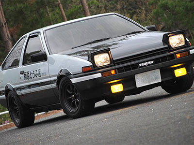
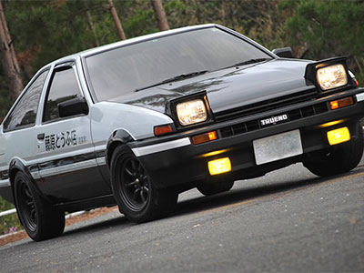

Here is a short clip from the Anime ->
This car is an AE86 Trueno, inspiration from Initial D. The AE86 series of the Toyota Corolla Levin and Toyota Sprinter Trueno are small, front-engine/rear-drive models within the fifth generation Corolla range — marketed by Toyota from 1983 to 1987 in coupe and hatchback configurations. Lending themselves to racing, the cars were light, affordable, easily modifiable and combined a five-speed manual transmission, optional limited slip differential, MacPherson strut front suspension, high revving (7800 rpm), twin-cam engine with oil cooler (e.g., in the US), near 50/50 front/rear weight balance, and importantly, a front-engine/rear-drive layout — at a time when this configuration was waning industry-wide.
 

So those who are wondering how one looks like in real life (IN ACTION)
These cars are known to be the Legends of JDM Cars (Japanese Domestic Market)